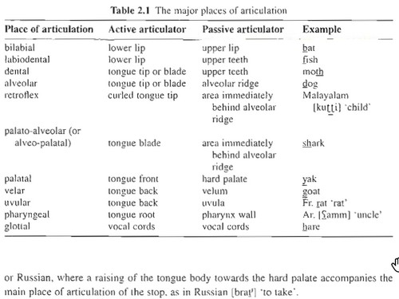

Place of articulation refers to the horizontal relationship between the articulators. It specifies the position of the highest point of the active articulator (usually some part of the tongue. but the lower lip may also be the active articulator) in relation to the passive articulator. The passive articulator involved typically gives its name to the place of articulation. The major places of articulation are shown in Table 2.1. In Table 2.1 most places of articulation are self-explanatory to the English speaker (see Figure 2.6). Let us mention here two that are not: retroflex and pharyngeal. A retroflex sound involves a particular shape of the tongue as well as a horizontal relationship between the articulators. The tongue tip is curled towards the back or the mouth. Such sounds may be heard in Indian English for ‘t' and ‘d', due to the influence of native languages of the Indian subcontinent, many of which have retroflex consonants. A pharyngeal sound involves moving the root of the tongue towards the back of the throat, i.e. the pharynx wall. Such sounds are common in many varieties of Arabic and Hebrew. It is also possible for a speech sound to have two places of articulation simultaneously, known as ‘dual articulations'. The articulations may be of equal importance, as in the initial labial-velar sound in ‘wombat', involving as active articulators the lower lip and the back of the tongue, or one place may be ‘added on' to another (primary) place. This latter situation is found, for example, in the palatalised stops of Slavic languages such as Polish or Russian, where a raising of the tongue body towards the hard palate accompanies the main place of articulation of the stop, as in Russian [brat̪ʲ] 'to take'.
